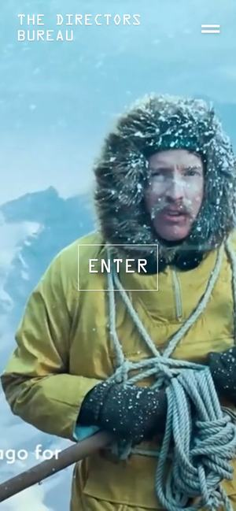

Awwwards 우수 선정 · 2024.06먼저 보세요01The Directors Bureau
와 포인트첫 화면 전체에 눈보라 속 등반가 영상이 흐르고, 가운데에는 네모난 ‘ENTER’ 하나만 놓입니다. 화면 아래 자막이 영상과 함께 바뀌어, 홈페이지를 여는 순간 짧은 영화가 시작되는 느낌입니다.
〈작별인사〉라면첫 화면을 참고영상 한 편으로 채우고 가운데에는 ‘영상 보기’ 하나만 둡니다. 아래 자막 자리에는 그 영상의 주인공을 소개하는 한 줄이 영상과 함께 바뀝니다.